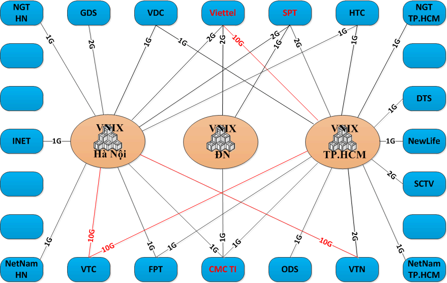

Vietnam
Vietnam is blessed with free wifi at nearly any cafe even if it doesn't always work as advertised, like most things in Vietnam. Vietnam is also blessed with cafes on nearly every block. So finding a wireless access point to get online is pretty easy for anyone traveling or living in Vietnam.
Hackers can see what websites you're visiting and then log into those websites as you
The problem is security. Many times cafe owners will leave their wifi access points completely open without needing a password to get on. This makes it basically trivial for a hacker to sniff the airwaves and see everything on the network. If you are on such a network you should secure your connection with an SSH tunnel or a VPN.
If they do have a password, they may be using older security schemes like WEP or WPA, rather than WPA2. Without WPA2 or more secure systems that require the network owner setting up an authentication server (too much to ask for any cafe owner) it is also possible to break the encryption.
Security setting: WPA2
For now, insist on at least WPA2. If you're setting up wifi at your house and you don't want people to sniff your traffic, use WPA2 with a long random password and be sure to change the SSID from the default network name provided by the manufacturer. (The reason that using a default SSID is less secure is that rainbow tables exist for these, making password cracking potentially easy.)
Using WPA2 means that it's harder for crackers to guess your network's password and then either use your network connection or sniff your traffic. But if you give out your password, anyone with the password can do the same. With WPA2 it's harder for other people to sniff your traffic, but there are ways (ARP poisoning) around it. You should thus still create an encrypted connection (for normal people I would recommend using a VPN) to an outside server and tunnel your traffic over that connection.
Besides sniffing your traffic, a hacker who steals your cookies can then login to websites which you're currently logged in by pretending to be your computer. So they could post on Facebook as you, send emails as you from Gmail, or worse.
MAC Address Filtering
What else can you do on your home wifi network? Since you usually know what computers you want to allow to access the wifi router, you can set it so only known computers are allowed on the network by using MAC address filtering. The MAC address the hardware address built into your wireless card or in the wireless hardware of a laptop and it's very difficult to lie about what your MAC address is so this will help keep the riff raff out.
Advanced users can install DD-WRT or OpenWRT firmwares onto their wireless access point, thus enabling tons of extra features and the ability for finer grained security controls.
- tomo's blog
- Login to post comments
- Comments
What to do if you're a content provider in Vietnam?
If you're fairly established as a Party-affiliated Vietnamese newspaper then you have probably been selling banner ads for years on your online properties. Maybe you have enough online properties that they constitute a small ad hoc online ad network which you can sell to advertisers. If you're smaller than that then you should be concentrating on producing content rather than developing the ad selling product. So you'd need to find some service to take care of selling your available ad space inventory.
How online ads are sold outside of Vietnam
The first online ad marketplace that should come to anyone's mind is Google with its AdWords and AdSense products (which complement each other as supply and demand). I've played around with Google AdSense (the advertising product for publishers) on this site but it may not be appropriate for Vietnamese publishers. As an American it's easy for me to connect to the US financial system. Vietnamese people would have trouble opening up a US bank and the Vietnamese banking system is barely connected to itself (making homegrown PayPal clones even more difficult to pull off) much less to the US or international banking system. It's hard to move money into and out of Vietnam, although regulations make inflows of cash much easier than outflows. And due to the large amount of fraud originating from Vietnam it's hard to get outsiders to allow normal Vietnamese people to receive money, since once it enters Vietnam it's hard to get it back out if there are any problems, outside of the remittance networks. Until very recently it wasn't possible to use PayPal as a Vietnamese person here and it's still extremely rare.
If you're one of Vietnam's major publishers then you don't care too much about homegrown ad networks since they only reduce your monopoly on ad space, while pushing down prices and encouraging transparency which could force you to be more honest about your product and push prices down even further.
Vietnamese ad networks for Vietnamese content websites!
But having more available ad networks to Vietnamese content producers helps develop a strong web ecosystem for and by Vietnamese people, giving them ways to earn money both domestically and from foreign companies wanting to market to Vietnam. Blogs and other content websites could potentially give Vietnam's economy a tiny push in the right direction although currently it's risky to plan a business around content websites in Vietnam for a number of reasons and monetization is just one of them. (Just recently, Zing, a large content network with news, a social network, and lots of downloadable but unlicensed (pirated) music got dropped by major advertisers like Samsung, Coca Cola, Canon, Yamaha, Intel, etc. precisely because of the latter - they didn't want to associate themselves with an illegal music downloading site, but without the mp3s it would be hard for Zing to get traffic.)
So without further ado here are the online ad networks in and targeting Vietnam:
- ComScore put Innity in first place (of only two measured competitors?) for ad network size in Vietnam in February of 2011 with 900,000 average daily visitors. I really can't say whether Innity, from Malaysia and serving all of Southeast Asia, is the biggest ad network running in Vietnam.
- VietAd, part of IDG Vietnam's portfolio, running since May of 2007. According to them:
"VietAd Ad-Network is an intermediate system connecting sellers and buyers of online advertising. In other words, VietAd operates as an trading platform helping website owners to sell advertising, individuals and enterprises to advertises; both of them can save time and cost while they still have effective advertising campaigns."
"After more than two years on the market, VietAd attracted nearly 1,000 quality media, news, commentary and entertainment websites in Vietnam, served more than 3 billion Ad views and reached 400 million website hits per month."
- AdMarket, a product from AdMicro which is part of BarCamp Saigon sponsor VC Corp. (not to be confused with MicroAd which just entered Vietnam from Japan). Online advertising from 900đ/click and reaching up to 25 million people.
- AdNet.vn from PeaceSoft (NganLuong, eBay.vn, ChoDienTu)
- Ambient Digital Network (minimum payout payment of 300,000 VND) based in Ho Chi Minh City.
- VietBUZZad
- AdMax Network in South East Asia, based in Singapore
- AdBay, partner of PeaceSoft and VietBUZZad.
- AdBay.vn in Hanoi
- CleverAds, a local Google AdWords partner who helps companies set up their AdWords campaigns, also claim to have their own AdNetwork.
- Some hints of an ad network (Fmob) coming from Joomlart. Will have to ask him about that soon.
- New from FPT, eClick.vn
As mentioned, large news sites have their own ad networks. I skipped some really pathetically small ad networks. If you have anything to share about the ad networks listed above -please- post a comment. :)
One question I have and I welcome any theories:
How long before MJ Group (NhomMua, DiaDiem) or Rocket Internet, both big consumers of online ad space in Vietnam, decide to roll their own ad networks?
Awhile ago, some time after I undertook a bicycle trek from Nha Trang to Mui Ne, I was contacted by a reporter from Tuoi Tre News to write something about it. Only a tiny bit of the information I provided was actually used and I've since lost track of the article so I'll just post what I already wrote here.
1. How do you think about this new trend: travelling across the
country by bicycle. Is it popular in your country? Did you ever make
it or finish it shortly?
If it really is a trend rather than just a few outlier cases, then I
think it's great and it should really be encouraged as a wholesome and
healthy activity as well as a way to travel. In the US, it's actually
not a common thing to do although there are clubs which regularly meet
and do long-distance rides together, which may also include camping,
if the weather is agreeable. But I would like to see more people in
Vietnam ride bicycles for sport and exercise and also as a means of
transportation, not just for slow but far journeys like the one we
took. Besides the possibility of extremely cold weather in my home
country, there are many other ways in which Vietnam is a more ideal
long distance cycling destination which I hope to blog about someday.
My father is a cyclist and I joined him on a ride through forests and
countryside before I came to Vietnam. Unfortunately, I don't have a
bike to ride with me now.
2. According to Vietnamese traditional lifestyle, youngsters all
should follow the same way: finishing school, going to work, getting
married and living in peace for the rest of their life. Youngsters who
choose to go other ways like: doing gap year, going through other
countries by bicycle in a long time… means something crazy and
undervalued. How do you think about this way of thought?
Actually, I think most people can fit a cycling trip into an otherwise
traditional education since it can easily be organized during a break
and can be done on a budget. I don't think it's crazy at all, nor
should traveling to other countries or taking off for a gap year be
considered especially crazy. If you think so then your bar for what is
crazy is set too low. I do think that Vietnamese youth should be
willing to try new things and not constrain themselves only to what
the mass majority has done in the past. And definitely learn from what
people are doing around the world, not just the world around you.
3. According to your opinion, what is the thing that youngsters
gained and you lost after this trip?
I lost some weight, haha. Otherwise, there's really nothing to lose.
I gained some new friends who I now have a lot of respect for. I
learned things about myself as well. Any time we travel we gain new
experiences as well as learn about ourselves. And of course seeing a
country at the slow pace of a bicycle is much different from a car on
a highway. On a bicycle, not only do you see the terrain but you feel
the gradients, the shade from every tree, and the difference in wind
from province to province. What I gained was a new perspective on
Vietnam and especially the Vietnamese people.
- tomo's blog
- Login to post comments
- Comments
In South Vietnam, like the rest of tropical Southeast Asia (but not North Vietnam), there are only two seasons: rainy season and dry season. Hanoi has the traditional four seasons with mild but cold winters.
The actual timing of monsoon seasons varies from country to country and there are many regional monsoons throughout the world, including the United States. In Saigon and the Mekong Delta the dry season is from about November to February (around Tet) after which the weather transitions into rainy season around June. April and May can be uncomfortably hot without the respite provided by rains.
The difference is not just in precipitation but also temperature. The temperature range for Ho Chi Minh City throughout the year is generally 25C to 33C, whereas in the hottest days of May it may reach a max of 35C and the coldest nights of December may reach as low as 20C. For travelers who want to enjoy the coolest and driest weather then the months of November, December, and January would be the best, although travelers to Da Lat can come any time of the year and enjoy cool weather.
Tropical Storm Weather
During the wet season, there are also many tropical storms and typhoons off the sea to the east. These storm systems often batter the Philippines and then head to central or northern Vietnam and usually only cause heavy rain to fall on Saigon which rarely gets directly hit.
How should you prepare for Vietnam's weather?
1. Bring an umbrella! Vietnamese people seldom use umbrellas and when they do it's to block the sun not rain. Umbrellas are not that easy to buy in Vietnam.
2. Most of the year it can be pretty sunny although the cooler weather is accompanied by overcast skies. Vietnamese people generally cover their skin with long sleeves and pants (and extra socks, gloves, and face masks) to avoid sun exposure. More foreigners don't, and so may want to use some sun screen which can be purchased at Western-style pharmacies here.
3. You can buy various rain coats here but mostly they are targeting bike riders, who need freedom of movement of their legs thus exposing the legs to rain and puddle splashes. You can buy them for around $1. You can buy cheap and easily ripped ponchos for around 4 per $1 and these come in small enough packs to carry with you. There are some interesting only-in-Vietnam raincoats such as ones with two head-holes so both the driver and passenger on a bike can share one rain coat, and also rain coats with a clear window in front in order to allow a bike's headlights to shine through.
4. Wear comfortable walking sandals. Most tourists walk a lot and they stick out because they're the only ones walking. When it rains your feet will get wet and you may be forced to walk through puddles. You don't want to wear socks or shoes that don't wash and dry easily.
When it rains, it pours
During the normal rainy season, there are many consecutive days where it will rain shortly every day. People who get caught driving in the rain will often pull over and seek shelter in front of shops or at bus stops. They should probably just ride busses more during the rainy season, but that's another topic altogether! It's best not to have any set schedule during the rainy season that way you can wait out any sudden downpours rather than trying to make appointments. You will find that Vietnamese people will use heavy rain as an excuse for not coming somewhere on time.
Search for PayPal in Vietnam and you won't get many good results.
If you're American or from another Western country and just traveling to or working in Vietnam temporarily and you already have a PayPal account then heed this one warning: DO NOT access your PayPal account WITHOUT a VPN! (If you don't already have a VPN get one. Ref: StrongVPN) Doing so will flag your account (similar to what happens when you use your credit card overseas without warning your bank first) and your PayPal account will be limited to receiving money only until you "verify" it. This can be a PITA so just DON'T access PayPal using a Vietnamese IP address. You can Google "what's my IP" to make sure your traffic is being tunneled properly.
History: PayPal started as a service for eBay sellers who didn't have real businesses and therefore couldn't open merchant accounts to accept credit cards to accept payment from buyers, both as bank transfers as well as credit and debit cards. It was eventually bought by eBay due to the symbiotic nature of the two. For many years PayPal was not available to Vietnamese users. due to the high amount of fraud originating from Vietnam. Fraud is one of PayPal's biggest problems and they spend a considerable amount of resources trying to detect fraud, often resulting in suspended accounts of legitimate users. Many non-Americans can't use it which has resulted in services like Moneybookers or Liberty Reserve.
PayPal's absence from Vietnam left open an opportunity for Vietnamese PayPal clones like MobiVi, etc. The problem with these is that none are as versatile as PayPal and some only allow transferring money between users of the service who also use the same bank!
If you're Vietnamese or working in Vietnam and want to open a Vietnamese PayPal account it is now possible to do so and receive money. You simply need to open a debit/credit card account at one of these banks: Techcombank, ACB, Đông Á, Eximbank. Then you can connect it to a Vietnamese PayPal account. Remember that PayPal won't allow you to change your country once you open an account.
Final warning: Don't access your US PayPal account from a Vietnamese IP address. Always use a VPN like StrongVPN. I learned the hard way and ended up with a locked and useless PayPal account. Whether you should even use PayPal is another issue altogether.
A gallery of Vietnamese girls, models, actresses, and singers showing off their nipples in public.
It's that time of the year again. Flood time!
Saigon and Vietnam's Mekong Delta generally has two seasons - rainy and wet. But at the end of the year somewhat coinciding with the dry season is high tide season where the highest tide level maxes out some meters above low tide. Each year the effects of high tide on Ho Chi Minh City get worse, not just due to climate change or rising sea levels, but due to 1) urban sprawl taking over former urban flood plains which would have absorbed some rain water (rain water just makes the problem worse but isn't the root cause) with construction and paving over of land with impermeable surfaces, as well as 2) a general sinking of the city due to (illegal) leaching of underground water supplies reducing the water table level and 3) lost efficiency of canals where piles of trash thrown in the rivers is blocking the flow of water back out
This week's high tide times so you know when your streets will be flooded: (data comes from Saigon Port dumped into a Google Doc which is then proxied through this site to overcome cross-site script hacking in order to hide the days outside of this week)
- tomo's blog
- Login to post comments
- Comments
Telecommunications in Vietnam visualized with some network maps showing both international and domestic peering arrangements between ISPs. Bookmark this page and I'll add more maps as I find them.
For international bandwidth VNPT (VDC) is important. For domestic internet look for connections through VNIX. VNPT, FPT, Viettel, NetNam, SPT, even VinaGame and Google.



Information about server hosting in Vietnam
Information about cloud hosting and content delivery network access from Vietnam
{kind=link}
{kind=link}
I've been doing some testing on a plethora of content delivery networks using cloudharmony.com's speedtest service. Testing from multiple ISPs in Vietnam, during the most recent undersea cable outage, it becomes clear that, although none of the CDNs publicly have datacenters in Vietnam, a small handfull of networks like Edgecast CDN (via http://www.speedyrails.com/) come out on top as winners (except for an anomalous reading of small file size downloading from one ISP). In these tests, performance of poor hosts relative to the top was as much as 20 times slower, meaning CDN selection without taking into consideration the real world results in Vietnam can mean you're throwing a lot of money away. Poorly performing content delivery networks were more or less not any faster than hosting in the US.
Limelight CDN also had some of the best overall results, better than Edgecast in some cases.
VoxCAST CDN had a surprisingly low latency time suggesting it could be closer to Vietnam than anything in Singapore, but VoxCAST (Internap) do have a Singaporean datacenter which is probably just faster than other points in Singapore. Unfortunately, the transfer speeds were too low. Internap's CDN taken into consideration alone fared poorly. Edgecast state they use Equinix Singapore Exchange so it may be worth looking into colocating there.
Windows Azure CDN had some promising results in some tests whereas other tests failed. I didn't investigate further when CDNs failed, assuming they should not fail.
What may be more surprising is who isn't the winner here: Amazon
Amazon EC2 instances in both Singapore and Tokyo (just for comparison) performed poorly both in terms of latency and throughput. Amazon's CloudFront service did no better.
Asia-America Gateway undersea cable outage
At the time of writing, the AAG internet cable that connects to Vietnam at Vung Tau's landing station, thus providing FPT (although Viettel and VNPT do also use AAG) in Ho Chi Minh City and its subscribers with international bandwidth to Hong Kong, Singapore, and points beyond in the US, has been cut or damaged again. The cable experiences cuts both at the Vung Tau cable landing station as well as in the main trunk when all traffic along the cable would be affected. It is one of several international links to Vietnamese ISPs such as SEA-ME-WE 3 (but not SEA-ME-WE 4) which connects to Vietnam in Da Nang and links Southeast Asia with East Asia, Australia, the Middle East, and Western Europe. TVH and TGN-Intra Asia Cable System also land in Vung Tau connecting Southern Vietnam to the greater Internet. Vietnam also has terrestrial internet connections to China.
[Update: The AAG cable is being repaired from October 25, 2012 until November 4.]
One evening while on a brief holiday at sea in Vung Tau I got a phone call.
"Anh Tomo, can you do me a favor?"
One early thing I learned about Vietnamese interpersonal relations is that people are much more forward when it comes to asking for favors than Americans might be. There isn't the hesitation to owe other people favors that keeps me from asking in most situations.
Around this time I had begun practicing a new philosophy though. Basically, like the Jim Carrey movie "Yes Man" I started saying "yes!" to invitations and requests that I would have probably hemmed and hawed at in the past. This has led to some awesome times and amazing new friendships in Vietnam. But there have also been many moments of great regret.
This time the request was to be an emcee.
Some people (like my friend Minh) are (by whatever means (whether natural tendency or hard work and practice)) good emcees. They are able to talk continuously and control the flow of the audience as the situation requires.
A good MC has a bunch of qualities and I basically had none of them.
How to be an MC when you're not an MC:
1) Don't care.
2) Smile. (I'm told I don't.)
3) Have a good sense of humor. LOL.
4) Look pretty. Smiling helps and being funny leads to smiling.
That's about all I can really teach about that subject.
The event in question was a "date auction" for a charity I'd never heard of called Helping Hand Saigon. My first thought was "OMG, selling young Vietnamese girls to foreigners - can I really be a part of such an operation?"
As it turns out, they were auctioning off young Vietnamese men as well. A Vietnamese male singer-song writer also showed up, performed a few songs, and then auctioned himself off, garnering over a million dongs. Later I saw one of his music videos on TV so I guess it was a bargain.
All the money raised was going to charity and not the girls. The charity would then help educate poor Vietnamese kids. The auction winners would get contact details of the won "lot" in order to arrange a coffee, movie, or other PG-rated date. So not at a short time hotel.
There is a point to this blog post. Tomorrow night (this Saturday night) Helping Hand Saigon is having their second date auction!
If you want to do some online window shopping before deciding whether or not to go you can see the date auction candidate's photos on Facebook.
If you are interested in buying a cheap Vietnamese bride then Helping Hand Saigon's Date Auction will only waste your time. If you really do want to find a Vietnamese bride I recommend you just spend some time in Vietnam, volunteering and meeting people.
Useful Errata:
Time: 5:30pm August 25th, 2012
Location: H&M Lounge, 101 Suong Nguyet Anh, District 1
© 2010-2014 Saigonist.
Recent comments
1 year 11 weeks ago
2 years 3 days ago
2 years 1 week ago
2 years 3 weeks ago
2 years 19 weeks ago
2 years 19 weeks ago
2 years 19 weeks ago
2 years 19 weeks ago
2 years 19 weeks ago
2 years 19 weeks ago